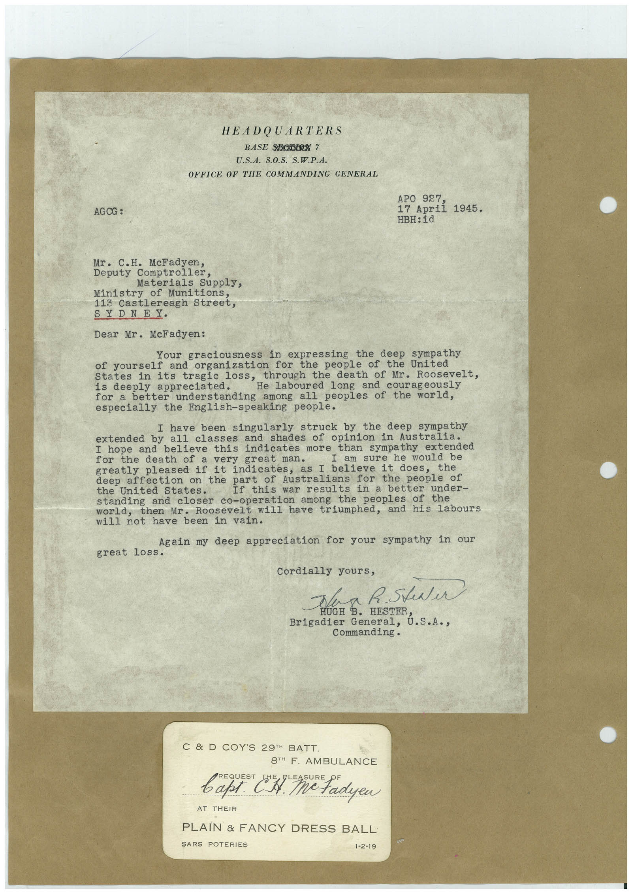

Book 1 · scan 053


Description
Transcription
Context
Review notes
Compare the machine draft with the scan. Handwriting and names need human review.
Artifacts
Edit the artifacts field in this note’s frontmatter to change these records. This summary is generated.
B01-S053-A01 — Letter & Handwritten note — Book 1, scan 053
Types: Typed document, Letter, Handwritten note
Scope: Whole scanned page; individual items can be split out during review.
Caption: Not mapped yet.
Caption source: Not recorded yet.
Caption status: unmapped
Machine transcription
HEADQUARTERS BASE SHOELON Y U.S.A. S.O.S. S.W.P.A. OFFICE OF THE COMMANDING GENERAL AGCG : APO 927, 17 April 1945. HBH: id Mr. C.H. McFadyen, Deputy Comptroller, Materials Supply, Ministry of Munitions, 113 Castlereagh Street, SYDNEY. Dear Mr. McFadyen: Your graciousness in expressing the deep sympathy of yourself and organization for the people of the United through the death of Mr. Roosevelt, States in its tragie los He Laboured long and courageously is deeply appreciated. for a better understanding among all peoples of the world, especially the English-speaking people. I have been singularly struck by the deep sympathy extended by all classes and shades of opinion in Australia. I hope and believe this indicates more than sympathy extended for the death of a very great man. I am sure he would be greatly pleased if it indicates, as I believe it does, deep affection on the part of Australians for the people of the United States. If this war results in a better under- standing and closer co-operation among the peoples of the then Mr. Roosevelt will have triumphed, and his labours will not have been in vain. Again my deep appreciation for your sympathy in our great loss. Cordially yours, Tea h. Steer HUGH Brigadier Commanding. C & D COY'S 29™H BATT 8TH F. AMBULANCE REQUEST варт. С.А. AT THEIR PLAIN & FANCY DRESS BALL SARS POTERIES 1-2-19